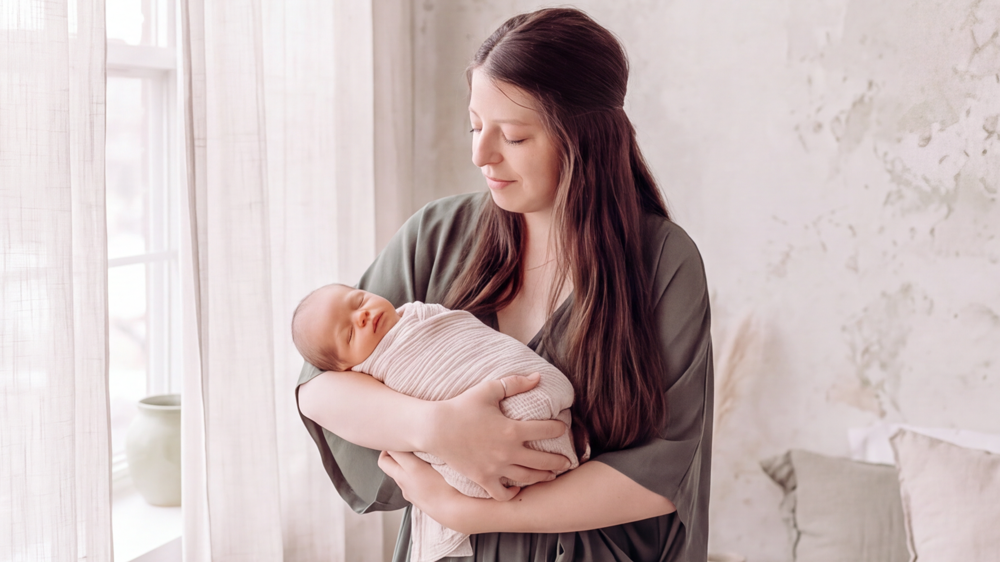

Safe
Our second floor is secured for moms and babies, with your baby never wandering beyond the nursery.
Postpartum stays · Lehi, Utah
Settle into a private suite, with meals brought to you and your baby cared for in our nursery just down the hall. Stay three nights or more in the first weeks after birth. Here, the world goes quiet and rest comes first.
How you’ll feel here
Getting the rest you need after birth is nearly impossible to do on your own. Here, the to-do lists, the noise, and the distractions stay outside.
Our second floor is secured for moms and babies, with your baby never wandering beyond the nursery.
Your baby doesn’t have to be asleep for you to rest. Our nursery team soothes, changes, and settles your baby through the night.
Ask anything, anytime. Lactation support, newborn guidance, and daytime classes help you go home knowing what to do.
Meet other new moms in the same season, then retreat to the privacy of your room whenever you choose.


The nursery
Our nursery is staffed around the clock, just down the hall from your suite. You decide how feedings work and can bring your baby back to your room anytime.
Your care team
Trained attendants care for babies in the nursery overnight.
The same familiar face brings meals, refreshes your suite, and helps throughout your stay.
Board-certified lactation support is available during your stay.
A licensed nurse oversees every shift.
A day at Levata
Breakfast arrives at your door. Your room attendant tidies up while you and your baby wake slowly.
Nap, visit with family, join a class, or book a treatment at the spa.
Dinner in your suite, then your partner and baby settle in however feels right.
Questions
Most moms arrive straight from the hospital or within the first two weeks after birth.
Just let us know. We can reschedule within a penalty-free window, based on availability.
Yes, for $75 a night, including meals.
Yes. Family, friends, and employers can pay for any portion of a stay.
Postpartum stays
Choose your dates and package, or book a free call to plan around your due date.